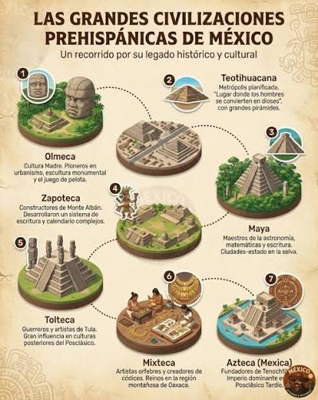

Texto: Antes de la llegada de los españoles, Mexico estaba habitado por grandes culturas como los Mayas, Aztecas y Olmecas. Los Mayas fueron grandes astronomos y matematicos. Los Aztecas fundaron Tenochtitlan en 1325 en el Lago de Texcoco. Construyeron piramides y templos impresionantes que aun existen hoy.
| Cultura | Ubicacion | Aportacion |
| Maya | Sureste | Calendario y Cero |
| Azteca | Centro | Tenochtitlan |
| Olmeca | Veracruz | Cabezas Colosales |